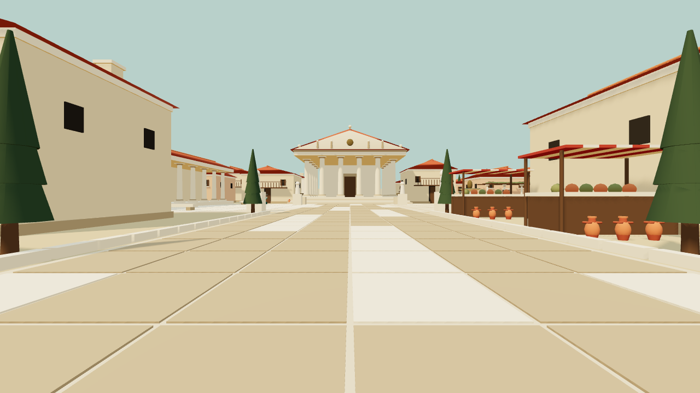

ŘÍM / THREE.JS × NÁŠ RENDERER
Stejné místo. Dva obrazy.
Posuň hranici a porovnej světlo, stíny a hrany. Pro plynulost a pocit ve VR otevři jednotlivé scény níže.

Náš WebGPUThree.jsNové snímky: 27. 10. 2026 · kamera jižní brána · 1280 × 720 · bez boje. Shodné místo a rozlišení; odlišné vyhlazování a části stínování. Toto je srovnání obrazu, nikoli důkaz stejné grafiky.
Co je na snímcích vidět
Kompozice a barevnost jsou velmi blízké. Three.js má v tomto záběru jemnější hrany střech, chrámu a čar dlažby. Náš WebGPU a WebGL2 vypadají obdobně. Toto pozorování neposuzuje blikání při pohybu ani komfort v headsetu.
Vyzkoušej skutečné scény
Obě verze Říma mají vstup do VR. V headsetu sleduj čitelnost hran, blikání při pohybu hlavy, stíny a záseky při boji. Statický snímek tyto vlastnosti neověří.
Nová optimalizace · 27. 10. 2026
Desktop Apple M1 · 2880 × 1920 · 3 páry, 8 s zahřátí + 25 s měření. Počet příkazů je skutečně odeslaná práce. FPS níže pocházejí z oddělených sérií.
| Renderer / zátěž | FPS | Kreslicí příkazy |
|---|---|---|
| WebGL2 · 512 modelů | 17,28 → 17,72 | 308 → 174 |
| WebGPU · 1 024 modelů | 24,23 → 24,90 | 576 → 241 |
WebGL2: 1 horší pár ze 3. WebGPU: 0 horší pár ze 3. Souběžná zátěž stále omezuje jistotu výsledku. Rozdílnou zátěž řádků vzájemně neporovnávej. Instanční buffery pro 512 modelů klesly přibližně o 85 %.
| Renderer | FPS | Kreslicí příkazy |
|---|---|---|
| Náš WebGL2 | 18,51 | 174 |
| Three.js · instancování | 26,18 | 108 |
Three.js stále vede. Vyhlazování a PBR/stíny nejsou sjednocené; měření ovlivňuje souběžná zátěž. Nové fyzické měření na Questu zatím nemáme.
Variantu se 107 příkazy jsme odmítli: WebGL v ní bylo pomalejší. Menší počet příkazů sám vyšší FPS nezaručuje.
Snímky zachovávají skutečný výstup rendererů. Bez retuše, přibarvování nebo dodatečného ostření. Optimalizace zachovává geometrii, rozlišení a nastavení hry.